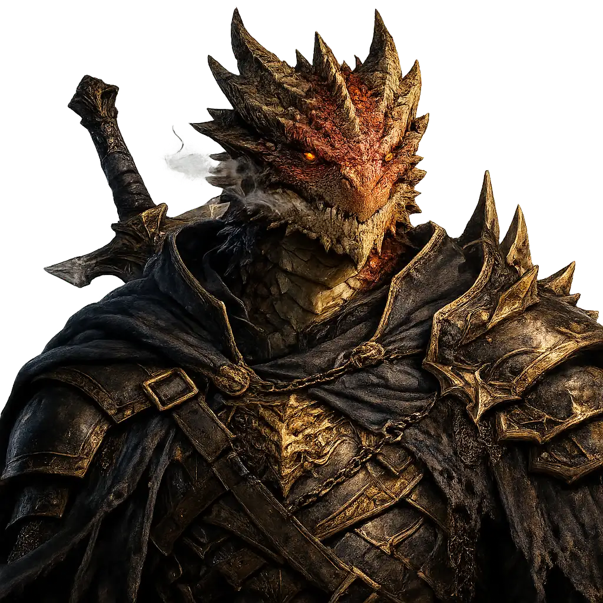
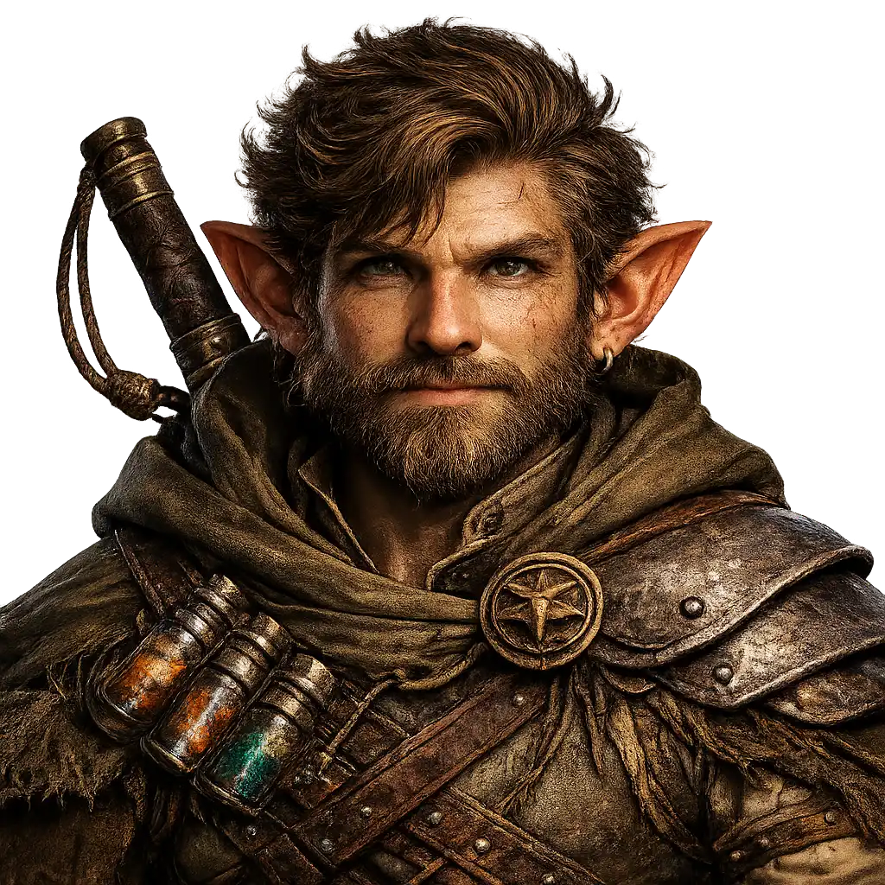
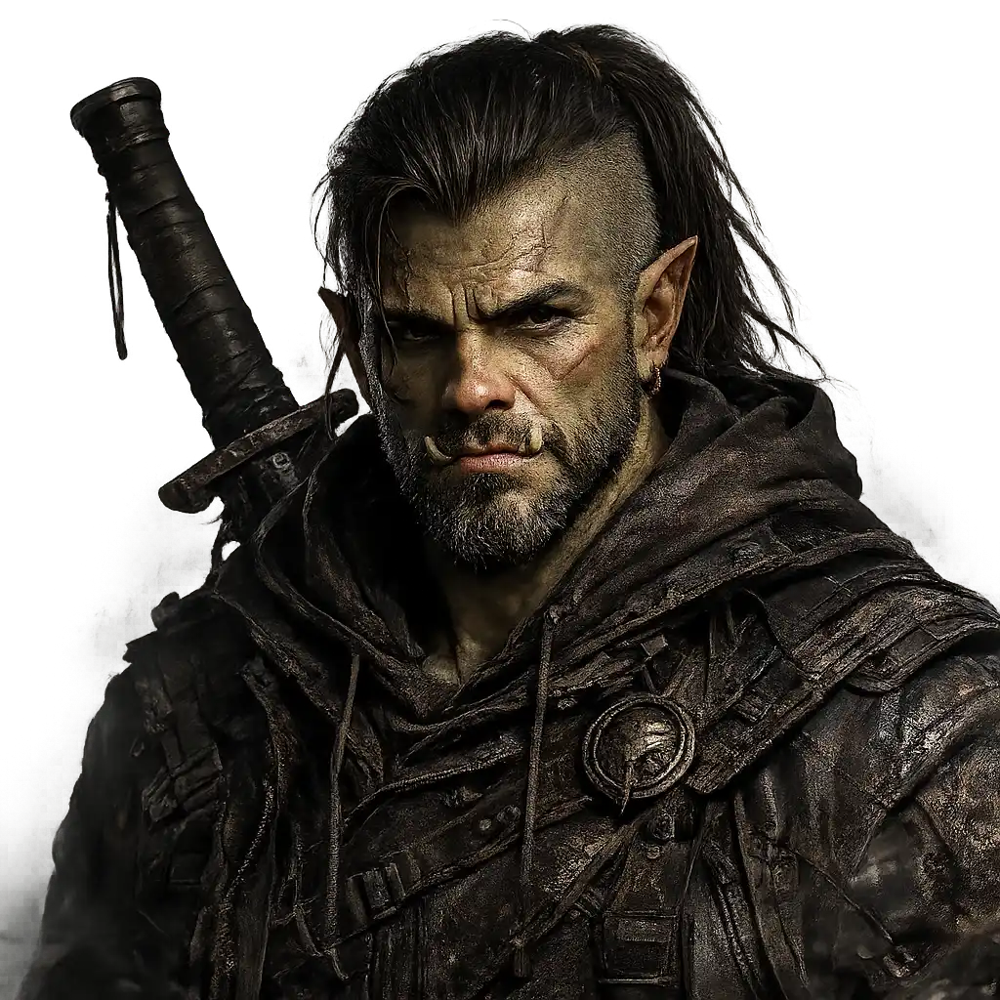
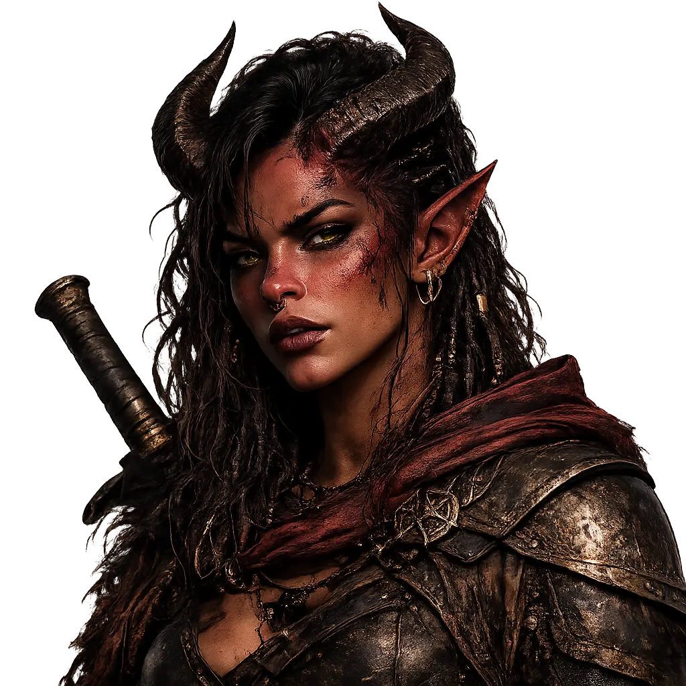

BARBARO

Ver Mais
Estilo de Jogo: Absorver quantidades massivas de dano e desferir ataques corpo a corpo devastadores.
Estilo de Jogo: Absorver quantidades massivas de dano e desferir ataques corpo a corpo devastadores.

Estilo de Jogo: Inspirar aliados, curar, usar magias de controle e ser bom em praticamente qualquer perícia.

Estilo de Jogo: Ataques mágicos constantes a distância, invocações customizáveis e truques de utilidade.
Versatilidade sem limites, ambição incansável e adaptabilidade pura. A raça mais moldável e audaciosa de todos os reinos.

Orgulho ancestral, a fúria elemental dos dragões e uma presença imponente. Onde passam, eles deixam destruição e respeito.

Curiosidade vibrante, intelecto aguçado e uma mente brilhante para a magia e a engenharia. Mestres da astúcia e da ilusão.

O melhor de dois mundos: a graça diplomática dos elfos e a ambição imparável dos humanos. Carisma e versatilidade incomparáveis.

Fúria incontrolável, vigor implacável e uma força brutal que recusa a derrota. O verdadeiro titã da linha de frente.

Herança infernal, mistério sombrio e o domínio sobre as chamas. Uma presença magnética envolta em sombras e magia de fogo.